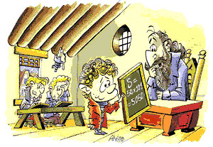

Programação Adlib: quando a inspiração vem e comanda o programador
Quando a inspiração guia o programador.

"Profe, finalizei", Gauss.
O resto da turma, penso eu, tentava criar uma clojure, ou guardas para uma função recursiva sem mudança de estado, ou usar um iterador, para somar a sequência de um até 100. Afinal, com tempo disponível, para que fazer um loop? Gauss, mais prático, criou uma função genérica que retorna a soma dos números naturais até n, em tempo o(1).
Na minha imaginação, ele entra num estado conhecido como adlib, e simplesmente a solução acontece. Esse estado de adlib é uma das coisas mais incríveis que pode ocorrer a um programador.
Você está entediado, tentando trabalhar, e então a coisa acontece: seus ouvidos não reagem ao barulho do ambiente, seus olhos estão fixados na tela do computador, mas você não percebe os alertas diversos de seu desktop, seu olfato não entra em modo de alerta quando alguém passa com uma xícara de café ou uma coxinha bem gordurosa por você, seus dedos teclam freneticamente. Nem mesmo a abertura de um pacotão de doritos atrapalha.
Quando um programador está realmente concentrado no seu trabalho, pode ser que não seja "culpa" dele. Ele pode estar em adlib. É um estado de plena euforia.
Você manda compilar, compila. Você manda executar, executa. E tudo isso num código limpo e eficiente. Esse estado de adlib, muito comum em bons músicos, não ocorre por acaso.
Ainda com os músicos, depende de muito estudo, prática, conhecimento e experiência. Quanto mais você conhecer, mais fácil você entrará nesse estado. É um presente rápido, mas muito eficiente. Quanto mais seu cérebro estiver exercitado pelo estudo e prática contínuos, mais vezes você experimentará isso.
Isso ocorre com programadores, você até poderia não conhecer o nome, mas certamente já experimentou. E acontece mesmo nos ambientes mais hostis, não importa seu ânimo nem sua disposição. Eu mesmo experimentei soluções lindas que me valeram o dia, nos ambientes de trabalho os mais absurdos possíveis.
Mas isso é exceção. A regra é estudar, ser criativo e rigoroso.